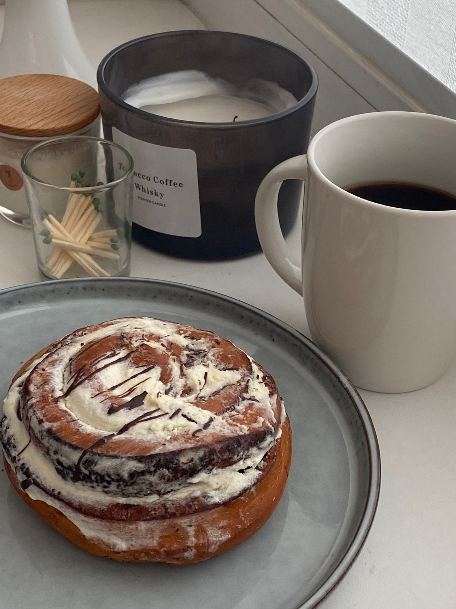
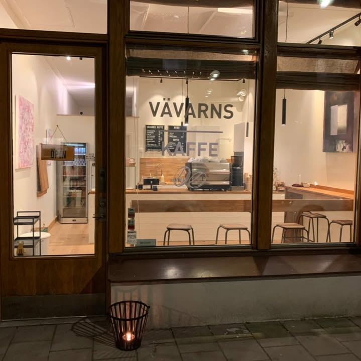

Kafé · Hammarby sjöstad
Kaffe & bullar vid vattnet
Nybakat, gott kaffe och ett varmt bemötande på Båtbyggargatan 24 – varje dag i veckan.
Hitta hit★ 4,7 av 5 · 40+ omdömen på Google
Hos oss
Det gästerna älskar
Fråga i disken om dagens bakverk och priser.
Kardemummabulle
Nybakad – gästernas favorit.
Croissant
Smörig och frasig.
Espresso & cappuccino
Gjort med omsorg.
Bryggkaffe
Påtår och lugn stund.

Om oss
Kvarterets kafé
Vävarns Kaffe är ett litet, ljust kafé i Hammarby sjöstad. Kom förbi för en morgonkaffe på väg till jobbet, en fika i solen eller en lugn helgförmiddag.
4,7
i betyg på Google – gästerna nämner bullarna, kaffet och den vänliga personalen.
Öppettider
| Måndag – fredag | 07:00 – 15:00 |
| Lördag – söndag | 10:00 – 15:00 |
Kontakt
Båtbyggargatan 24, 120 68 Stockholm
Hammarby sjöstad
076-771 90 55
vavarnskaffe@gmail.com
@vavarnskaffe